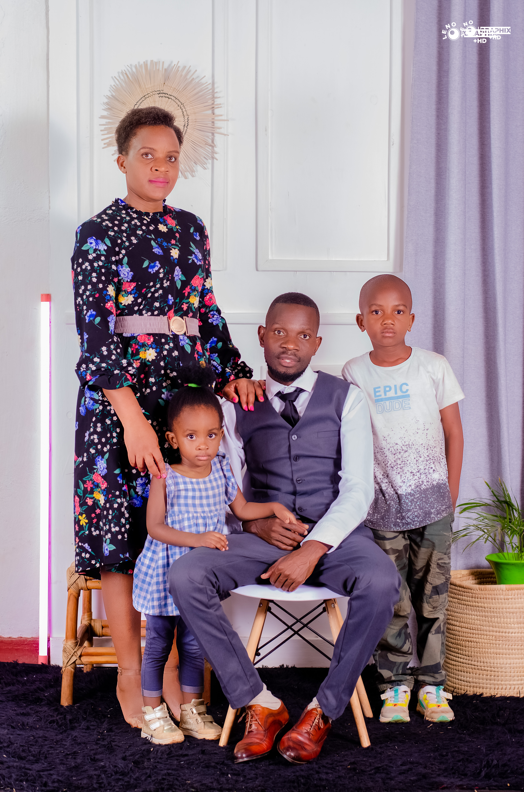
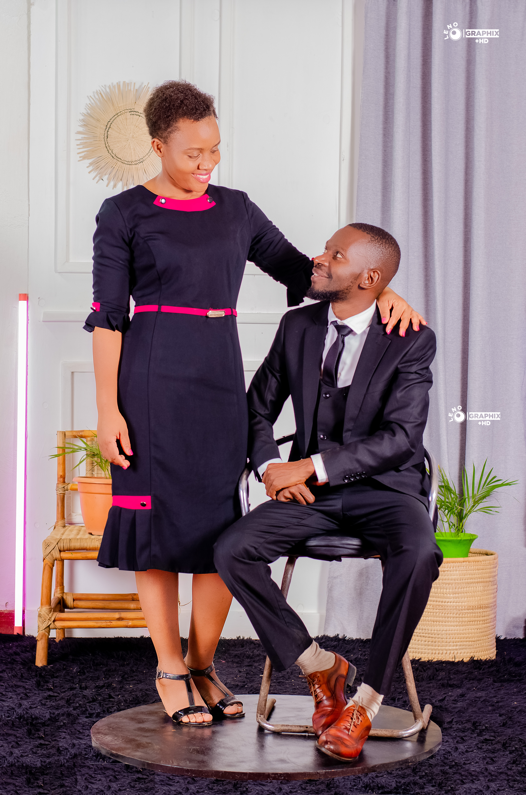

My Love! Ten years ago, we promised each other forever, and here we are, a decade later, still walking hand in hand, stronger and more in love than ever. Our journey hasn’t always been easy, but through every joy and every challenge, you have been my constant, my strength, and my greatest blessing. Each moment with you is a reminder of the amazing life we've built together, the memories we've shared, and the love that continues to grow deeper with every passing day. From the way you love me to the way you care for our beautiful family, you never cease to amaze me. I’m so grateful for the love, laughter, and the life we've created together. As we celebrate this special milestone, I look forward to the next chapter of our journey, knowing that as long as we have each other, there is no obstacle too big and no dream too far. Here’s to many more decades of love, faith, and happiness. I love you today, tomorrow, and forever. Yours always, Louis
Louis Yona Shawa and Esther Banda’s journey of love began 15 years ago in the heart of Blantyre, Manyowe Kausiwa village. What started as two young souls crossing paths at Dalaph and Manyowe Primary Schools grew into a love story that has defied odds, inspired faith, and flourished into a family rooted in God’s grace.
As we transitioned into different paths in life—Esther moving on to Providence Secondary School and Louis attending Namiwawa Community Secondary School—our connection only grew stronger, despite the physical distance. Esther’s academic brilliance led her to the University of Malawi, Chancellor College, where she earned both her degree and Master's. Louis, on the other hand, pursued an Advanced Diploma in ICT at The Polytechnic Continuing and is now completing his Bachelor of Management Information Systems at Malawi College of Accountancy.
Yet, our journey was not without its challenges. There were moments when people doubted us, when whispers surrounded us, saying we couldn’t make it. Some thought our dreams were too far-fetched, that our love wouldn’t survive the tests of time, distance, or circumstance. We faced discouragement from those who doubted our commitment and love for one another, with many believing that our relationship wouldn’t last. But through it all, we held on to each other and trusted in God’s plan for us.
Every obstacle we encountered only strengthened our bond. We leaned on faith, knowing that the love we shared wasn’t just our doing—it was part of a greater purpose. Through prayer, patience, and unwavering belief in one another, we overcame every challenge. Together, we silenced the voices that said we couldn’t make it, proving that with God at the center of our relationship, anything is possible.
Now, we stand here, celebrating not just our love, but our victory. A decade of marriage, filled with moments of laughter, growth, and unshakeable unity. God has blessed us with two beautiful children, our son Nathan Thanthwe Shawa, and our daughter Natalie Kuleza Shawa, who are living reminders of the love and grace that has carried us through.
Our story is a testament to the power of love, faith, and resilience. Every step, every trial, has shaped us into who we are today. We firmly believe that our marriage is not just a union of two hearts but a blessing ordained by God. Our journey has taught us that love, when nurtured with trust and devotion, can overcome anything.
As we continue forward, we do so with gratitude for the challenges we have faced and the blessings that have followed. This is our love story, a reflection of God’s unwavering hand in our lives, and a promise to keep Him at the center of our future.
God blessed us with these two beautiful souls
God blessed us with these two beautiful souls
11th October photo shoot at Shammis Garden